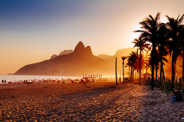
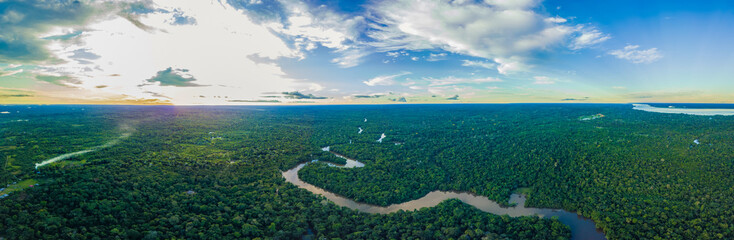

Destinos Turísticos
Conheça alguns dos lugares mais fascinantes do Brasil.
Rio de Janeiro
Cidade maravilhosa com praias icônicas como Copacabana.

Amazonas
A maior floresta tropical do mundo, cheia de biodiversidade.

Descubra os encantos do turismo brasileiro
Conheça alguns dos lugares mais fascinantes do Brasil.
Cidade maravilhosa com praias icônicas como Copacabana.

A maior floresta tropical do mundo, cheia de biodiversidade.
